Antarctica
Have you always wanted to explore the snowy tundra of Antarctic? Then one of our Antarctica trips is for
you. Not for the faint of heart or the easily cold, our Antarctica trips are differnt than our other offerings.
Passengers will spend most of their time on a cruise ship, with activities like hiking, camping, diving,
kayaking, and obseving wildlife spread throughout the trip. Epic MT offers three Antarctica trips:
Falkland Islands, Polar Circle, and Weddell Sea. Read below to find out more!
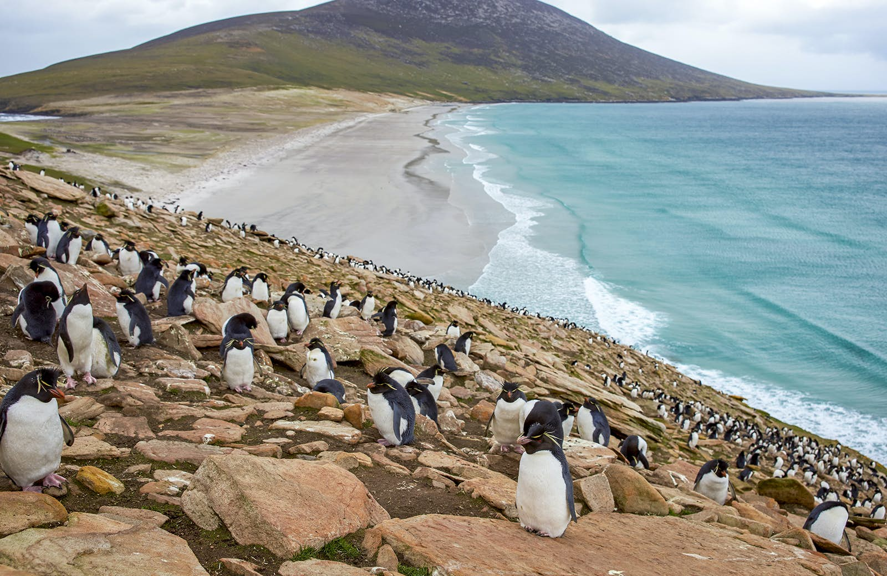
Falkland Islands
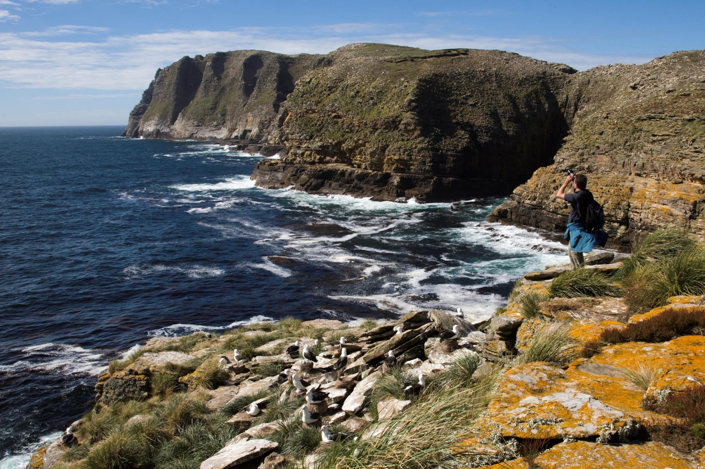
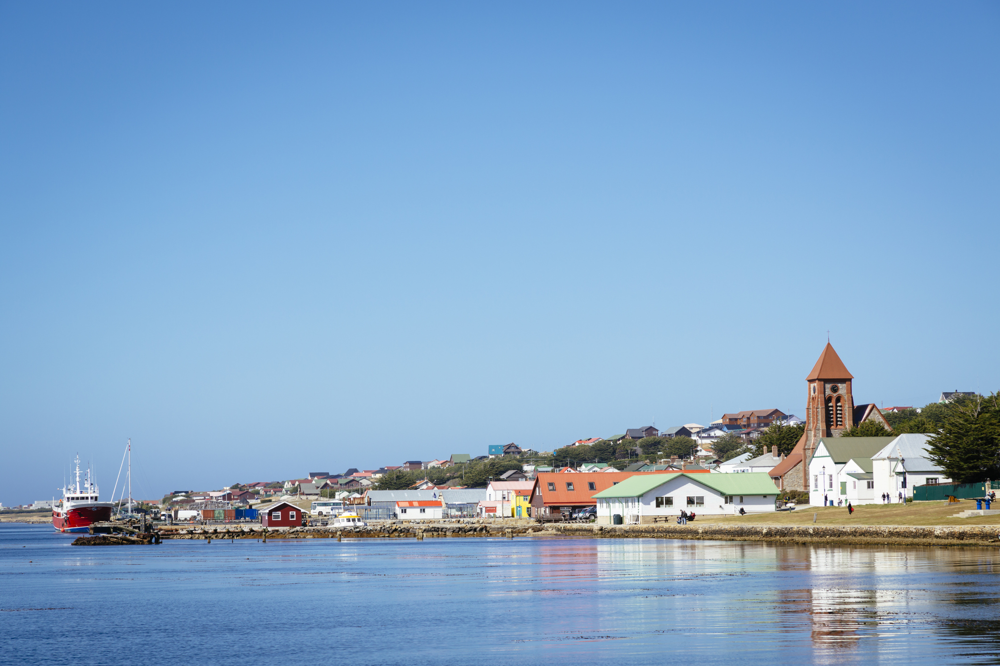
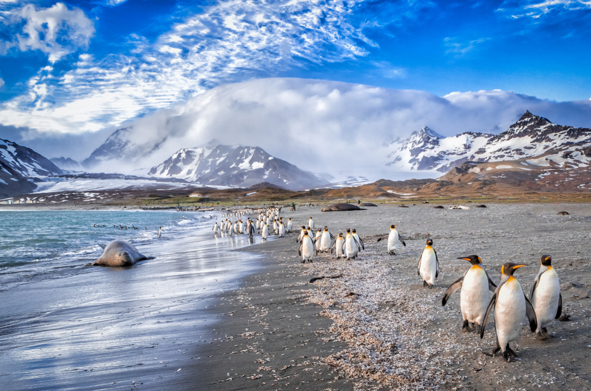
Falkland Islands
Do you love animals? Then the Falkland Islands Antarctica cruise is for you! In this adventure,
you will board the Plancius ship in Ushuaia, Argentina and travel around Antarctica for 19 days.
Some of the stops on the trip are Carcass Island, Saunders Island, Port Stanley, and Fortuna Bay.
Throughout the trip, expect to interact with and observe a wide variety of arctic wildlife, including albatrosses,
king penguins, and seals. If learning about wildlife from noted naturalists, arctic shore excursions, and seeing arctic
wildlife in their natural habitat sounds exciting, then sign up for the Falkland Islands cruise today!
Book A Trip
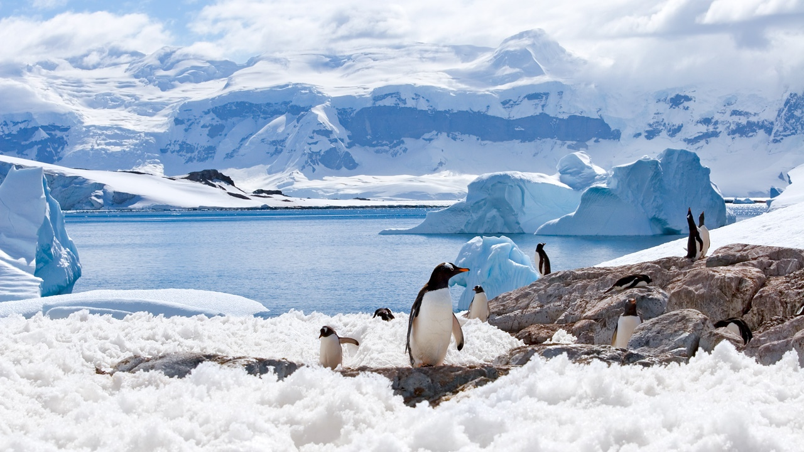
Polar Circle
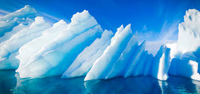
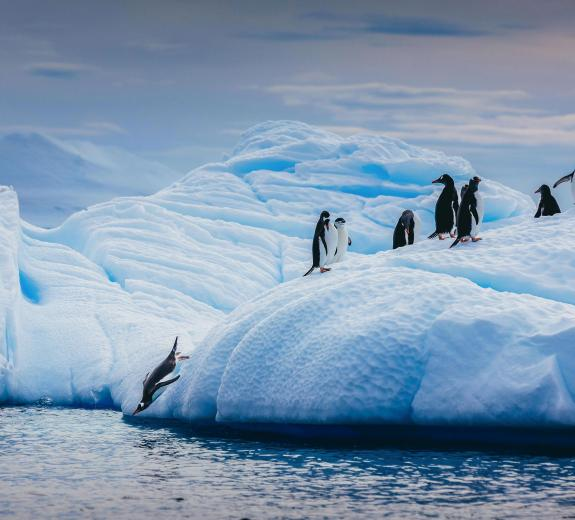
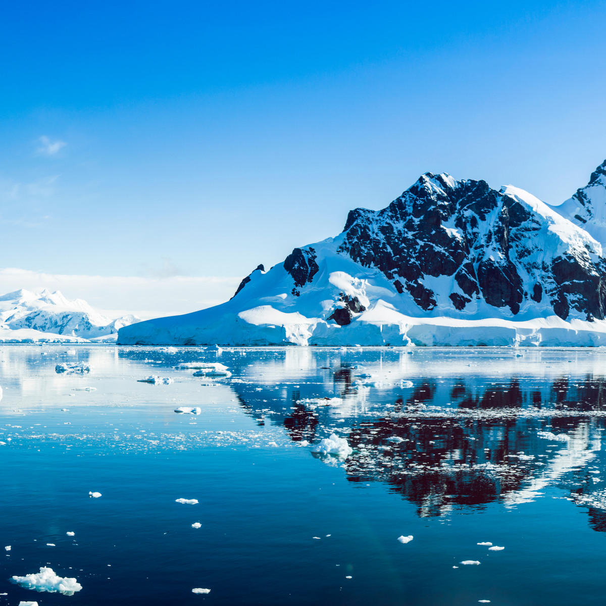
Polar Circle
Departing from Ushuaia, Argentina our eleven-day polar circle cruise is the perfect
expedition for the adventurers interested in camping, kayaking, and diving in the arctic circle.
Traveling through the Polar Circle and the Antarctic Peninsula, passengers can expect to see incredible
wildlife like Humpback, Minke, and Fin wales. Additionally, if you are interested in diving into the arctic
waters or hiking on the arctic glaciers you can do these activities and more on the Polar Circle cruise.
Book A Trip
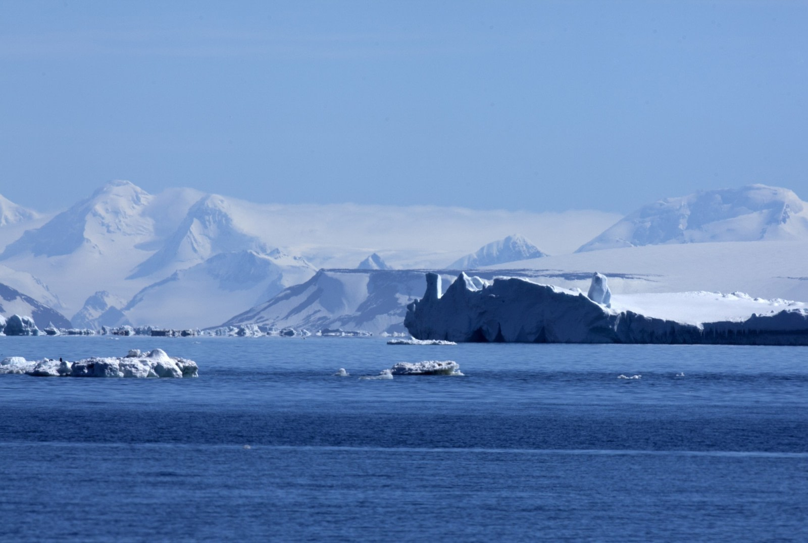
Weddell Sea
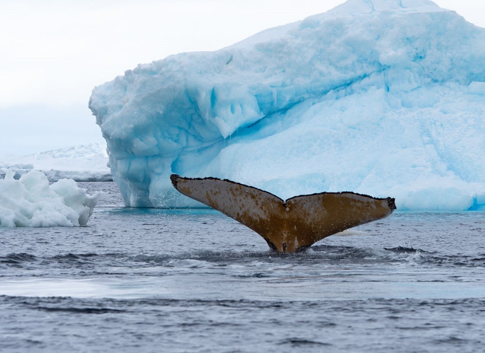
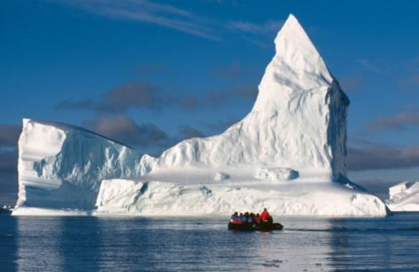
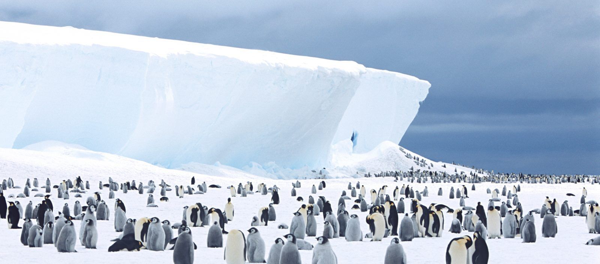
Weddell Sea
Our final cruise is the Weddell Sea cruise. Departing from Ushuaia, Argentina, passengers
will cruise on the Ortelius ship for ten nights. This expedition resembles an actual research
expedition where passengers will explore the range of Emperor Penguins near Snow Hill Island via
helicopter. Passengers can expect to see a variety of other birds as well, such as Adelies and Gentoos.
If you have always wondered what it would be like to be on a research expedition in the arctic, then this
trip is for you!
Book A Trip